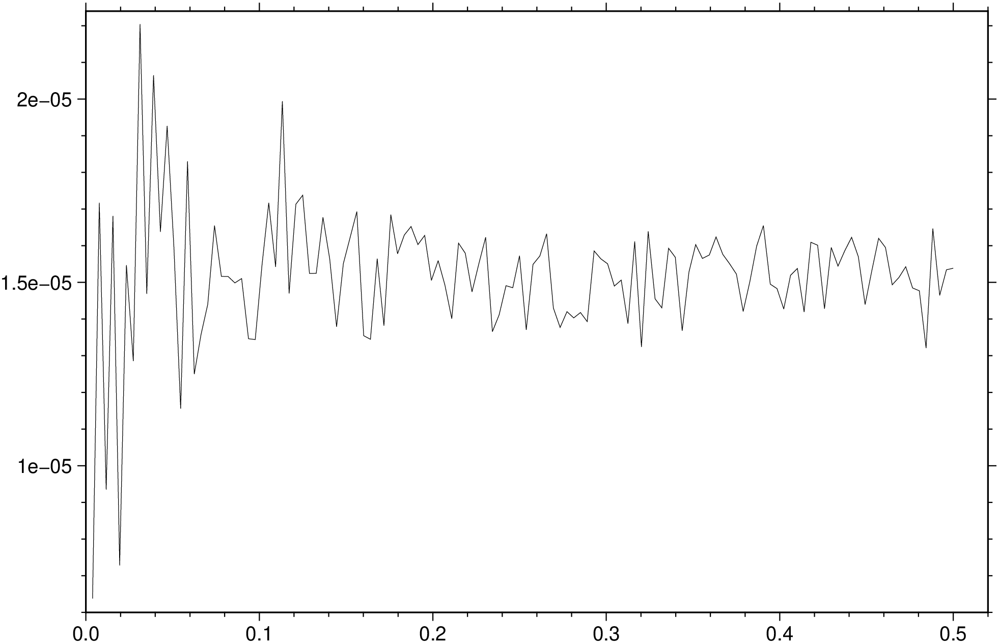
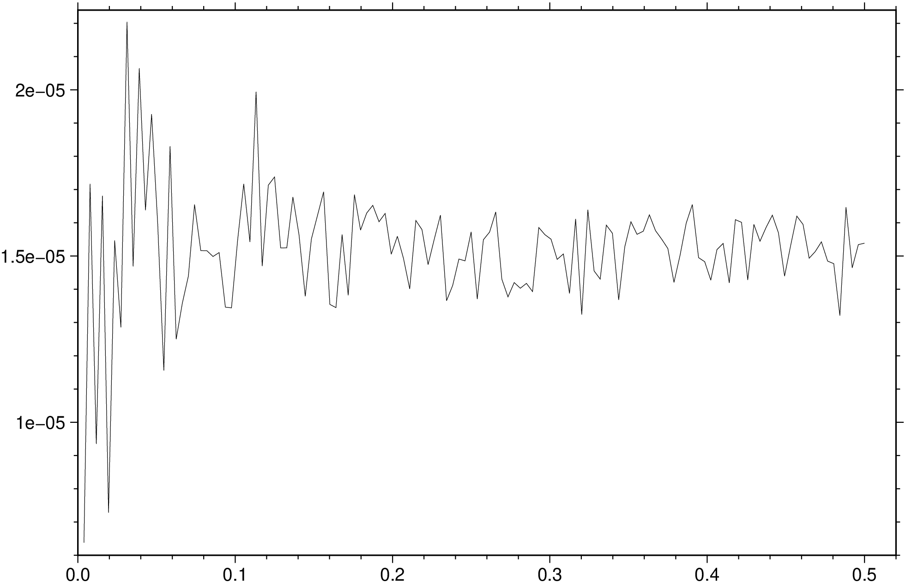

using GMT
D = grdfft("@white_noise.nc", radial_power=(dir=:r, normalize=true, wavelength=true));
viz(D)
Mathematical operations on grids in the spectral domain
(Warning: Manual translate by Claude. Needs revision)
grdfft ingrid [ ingrid2 ] [ G | outgrid | save ] [ A | azim | azimuth ] [ C | upward | continue ] [ D | dfdz | differentiate ] [ E | radial_power | spectrum ] [ F | filter ] [ I | integrate ] [ M | mgal45 ] [ N | inquire | fft_params ] [ Q | no_wavenumber ] [ S | scale ] [ V | verbose ] [ f | colinfo ]
grdfft will take the 2-D forward Fast Fourier Transform and perform one or more mathematical operations in the frequency domain before transforming back to the space domain. An option is provided to scale the data before writing the new values to an output file. The horizontal dimensions of the grid are assumed to be in meters. Geographical grids may be used by specifying the colinfo option that scales degrees to meters. If you have grids with dimensions in km, you could change this to meters using grdedit.
G or outgrid or save : – save=“outfile.grd” | save=“table.txt”
Specify the name of the output grid file or the 1-D spectrum table (see radial_power). This is optional for radial_power but mandatory for all other options that require a grid output.
A or azim : – azim=angle | azim=deg
Take the directional derivative in the azimuth direction measured in degrees CW from north.
C or upward : – upward=zlevel
Upward (for zlevel > 0) or downward (for zlevel < 0) continue the field zlevel meters.
D or dfdz : – dfdz=true | dfdz=scale | dfdz=“
Differentiate the field, i.e., take ∂/∂z of the grid z. This is equivalent to multiplying by kr in the frequency domain (kr is radial wave number). Options:
Repeatable. [Default is no scale].
E or radial_power : – radial_power=true | radial_power=:r | radial_power=(dir=:x, modifiers…) | radial_power=“r+w+n”
Estimate power spectrum in the radial or a horizontal direction. No grid file is created. If one grid is given then f (i.e., frequency or wave number), power[f], and 1 standard deviation in power[f] are written to the file set by save [standard output]. If two grids are given we write f and 8 quantities: Xpower[f], Ypower[f], coherent power[f], noise power[f], phase[f], admittance[f], gain[f], coherency[f]. Each quantity is followed by its own 1-std dev error estimate, hence the output is 17 columns wide. Select your spectrum by choosing one of these directives:
Two modifiers are available to adjust the output further:
F or filter : – filter=(lc, lp, hp, hc) | filter=“lc/lp/hp/hc” | filter=(dir=:x, lc=lc, lp=lp, hp=hp, hc=hc) | filter=(dir=:r, lo=lo, hi=hi) | filter=(dir=:y, lo=lo, hi=hi, order=n)
Filter the data. Place :x or :y immediately after F (or use dir=:x or dir=:y) to filter x or y direction only; default is isotropic [:r]. Choose between a cosine-tapered band-pass, a Gaussian band-pass filter, or a Butterworth band-pass filter:
Cosine-taper: Specify four wavelengths lc/lp/hp/hc in correct units (see colinfo) to design a bandpass filter: wavelengths greater than lc or less than hc will be cut, wavelengths greater than lp and less than hp will be passed, and wavelengths in between will be cosine-tapered. E.g., filter=(1000000, 250000, 50000, 10000), colinfo=:g will bandpass, cutting wavelengths > 1000 km and < 10 km, passing wavelengths between 250 km and 50 km. To make a highpass or lowpass filter, give hyphens (-) or missing for hp/hc or lc/lp. E.g., filter=(dir=:x, lp=missing, hp=50, hc=10) will lowpass x, passing wavelengths > 50 and rejecting wavelengths < 10. filter=(dir=:y, lc=1000, lp=250, hp=missing) will highpass y, passing wavelengths < 250 and rejecting wavelengths > 1000.
Gaussian band-pass: Append lo/hi, the two wavelengths in correct units (see colinfo) to design a bandpass filter. At the given wavelengths the Gaussian filter weights will be 0.5. To make a highpass or lowpass filter, give a hyphen (-) or missing for the hi or lo wavelength, respectively. E.g., filter=(lo=missing, hi=30) will lowpass the data using a Gaussian filter with half-weight at 30, while filter=(lo=400, hi=missing) will highpass the data.
Butterworth band-pass: Append lo/hi/order, the two wavelengths in correct units (see colinfo) and the filter order (an integer) to design a bandpass filter. At the given cut-off wavelengths the Butterworth filter weights will be 0.707 (i.e., the power spectrum will therefore be reduced by 0.5). To make a highpass or lowpass filter, give a hyphen (-) or missing for the hi or lo wavelength, respectively. E.g., filter=(lo=missing, hi=30, order=2) will lowpass the data using a 2nd-order Butterworth filter, with half-weight at 30, while filter=(lo=400, hi=missing, order=2) will highpass the data.
Note: For filtering in the time (or space) domain instead, see grdfilter.
I or integrate : – integrate=true | integrate=scale | integrate=“
Integrate the field, i.e., compute ∫ z(x,y) dz. This is equivalent to divide by kr in the frequency domain (kr is radial wave number). Options:
M or mgal45 : – mgal45=value
Specify the value of the gravity in mili Gals at 45 degrees latitude (used to convert gravity anomalies to geoid heights). Default is 980619.9203 mGal (Moritz’s 1980 IGF value). This value needs to be changed accordingly when using data from other planets.
N or inquire : – inquire=true | inquire=:a | inquire=(mode=:f, modifiers…) | inquire=“a+d+e+t50+v+w+z”
Choose or inquire about suitable grid dimensions for FFT and set optional parameters. Control the FFT dimension via these directives:
Without a directive we expect nx/ny which will do FFT on array size nx/ny (must be >= grid file size). Default chooses dimensions >= data which optimize speed and accuracy of FFT. If FFT dimensions > grid file dimensions, data are extended and tapered to zero.
Control detrending of data by appending a modifier for removing a linear trend. The default action is to remove a best-fitting linear plane (+d):
Control extension and tapering of data by appending a modifier to control how the extension and tapering are to be performed:
Tapering is performed from the data edge to the FFT grid edge [100%]. Change this percentage via modifier:
When +n is in effect, the tapering is applied instead to the data margins as no extension is available [0%].
Control messages being reported:
Control writing of temporary results: For detailed investigation you can write the intermediate grid being passed to the forward FFT; this is likely to have been detrended, extended by point-symmetry along all edges, and tapered. Use these modifiers to save such grids:
Q or no_wavenumber : – no_wavenumber=true
Selects no wavenumber operations. Useful in conjunction with inquire modifiers when you wish to write out the 2-D spectrum (or other intermediate grid products) only.
S or scale : – scale=factor | scale=:d
Multiply each element by factor in the space domain (after the frequency domain operations). [Default is 1.0]. Alternatively, append :d to convert deflection of vertical to micro-radians.
V or verbose : – verbose=true | verbose=level
Select verbosity level. More at [verbose](../common_opts/opt_V.html)
f or colinfo : – colinfo=??
Specify the data types of input and/or output columns (time or geographical data). More at
If the grid does not have meter as the horizontal unit, append +uunit to the input file name to convert from the specified unit to meter. If your grid is geographic, convert distances to meters by supplying colinfo=:g instead.
netCDF COARDS grids will automatically be recognized as geographic. For other geographical grids where you want to convert degrees into meters, select colinfo=:g. If the data are close to either pole, you should consider projecting the grid file onto a rectangular coordinate system using grdproject.
The default detrending mode is to remove a best-fitting linear plane (+d). Consult and use inquire to select other modes.
By default, the power spectrum returned by spectrum simply sums the contributions from frequencies that are part of the output frequency. For x- or y-spectra this means summing the power across the other frequency dimension, while for the radial spectrum it means summing up power within each annulus of width delta_q, the radial frequency (q) spacing. A consequence of this summing is that the radial spectrum of a white noise process will give a linear radial power spectrum that is proportional to q. Appending normalize=true will instead compute the mean power per output frequency and in this case the white noise process will have a white radial spectrum as well.
To obtain the normalized radial spectrum from the remote data grid @white_noise.nc, after removing the mean, try:

To upward continue the sea-level magnetic anomalies in the file mag_0.nc to a level 800 m above sealevel:
To transform geoid heights in m (geoid.nc) on a geographical grid to free-air gravity anomalies in mGal:
To transform gravity anomalies in mGal (faa.nc) to deflections of the vertical (in micro-radians) in the 038 direction, we must first integrate gravity to get geoid, then take the directional derivative, and finally scale radians to micro-radians:
Second vertical derivatives of gravity anomalies are related to the curvature of the field. We can compute these as mGal/m² by:
Note: To repeat dfdz twice, you would need to call grdfft twice in sequence or use the monolithic syntax.
To compute cross-spectral estimates for co-registered bathymetry and gravity grids, and report result as functions of wavelengths in km, try:
Or using two separate grid arguments:
To examine the pre-FFT grid after detrending, point-symmetry reflection, and tapering has been applied, as well as saving the real and imaginary components of the raw spectrum of the data in topo.nc, try:
You can now make plots of the data in topo_taper.nc, topo_real.nc, and topo_imag.nc.
Some operations like dfdz and integrate can be repeated to get higher-order derivatives or multiple integrations. In GMT.jl, you have two options:
Example for second derivative: